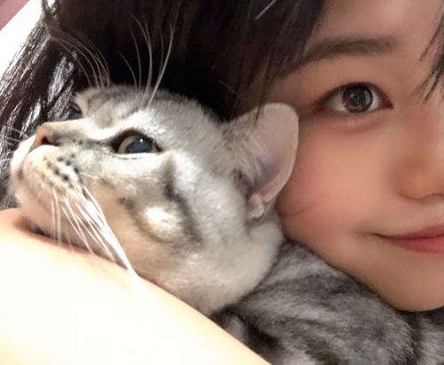

我试图在画布上捕捉那些无法被定义的瞬间——爱的温度、事物的本质、以及自然中无声的宁静。绘画不再是为了寻找一个宏大的意义，而是我体验当下、感受幸福的方式。很高兴可以通过画作分享我的情绪和感受，我体会过的爱、喜悦以及平静。
关于我about the artist
我并非出身于传统的美术学院，而是在西南交通大学的综合性学术氛围中度过了我的大学时光，主修绘画。大学时代的我，其实非常迷茫，在现实生计和梦想之间摇摆，我不确定自己是否能成为艺术家，毕业后，我顺着专业的方向，在上海成为了一名插画师，并专注于与博物馆相关的交互设计。那是份不错的工作，我做得得心应手，但内心的某种声音却越来越清晰：我难道要这样过一辈子吗？
2023年，我选择辞去工作，离开上海，辗转于不同的城市。这是一场漫长的、向内探索的自我放逐。那段日子，我一直在追问自己：“我是谁？我究竟想过什么样的生活，活着有什么意义？”我对绘画的思考也随之转变——从纠结“画画有什么用，能带给我什么，画画有什么意义”，转变为一种纯粹的确认：“画画只是画画，而我喜欢画画。”
在2026年，我决定将全部的精力投入到艺术创作中，正式开启我的全职艺术生涯。
我的人生观和创作观高度同频：从曾经不断追问“活着有什么意义”，变成了现在的“享受当下的每一天”。从寻找“画画有什么意义”变成现在的“我喜欢画，所以画”我不再追求宏大的叙事，而是将所有的力量倾注于笔触与色彩。我希望我的画作能成为情绪的容器，带着平静与幸福的底色。透过这些关于爱、关于本质、关于自然的画面，我在画布上讲述着自己，也邀请观者共同完成一场安静的对话，在平凡与自然中，找回属于我们自己的内心秩序。
展览 & 新闻 (Exhibitions & News)
目前我正处于独立艺术生涯的起步阶段，期待未来能在这里分享我的最新展览与艺术动态。